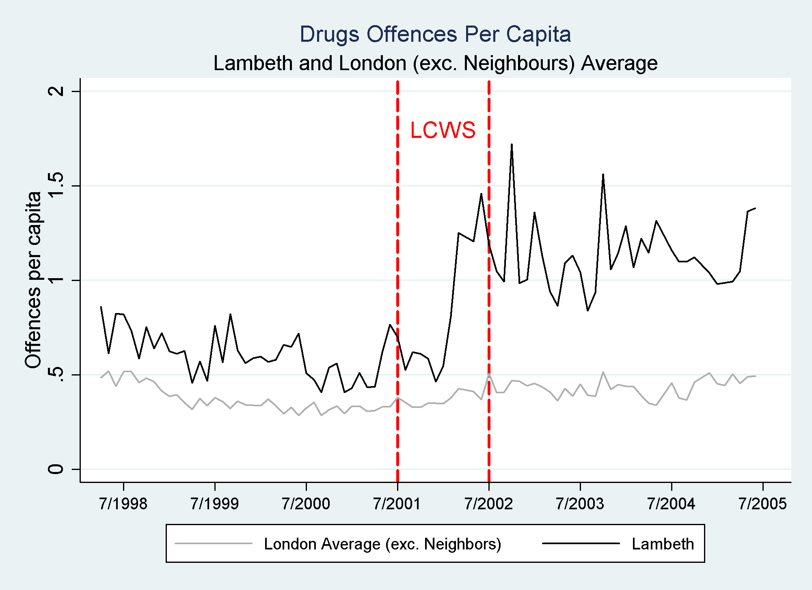

i am a lecturer (assistant professor) in the economics department at the university of southampton. i received my phd from university college london, under the supervision of imran rasul and jérôme adda.
my main research interest is in applied microeconomics. i am currently working on projects related to the economics of crime, drug use and criminal sentencing. in the past i've worked on several different projects related to education, an area in which i'm still interested.
hispanic-white sentencing differentials in the federal criminal justice system [june 2016], with imran rasul
in the federal criminal justice system, large differences in sentencing outcomes exist between hispanic and white defendants. a candidate explanation is ingroup bias causing ‘outsiders’ (hispanics) to be treated differently to ‘insiders’ (whites). to probe this explanation we exploit 9-11 as an exogenously timed cue heightening the salience of insider-outsider differences in american society. based on linked administrative data that covers criminal cases from time of arrest through to sentencing, we use a did research design based on defendants all of whom were arrested pre 9-11, but some were sufficiently far advanced along the timeline so as to come up for sentencing pre 9-11, while others had only just entered the timeline prior to 9-11, and so were sentenced post 9-11. we document that among those sentenced post 9-11, hispanic-white judicial sentencing differentials are further exacerbated relative to these sentenced pre 9-11, while black-white sentencing differentials are unaffected. our linked administrative data and research design also allows us to document the differential treatment of hispanic defendants by prosecutors in pre-sentencing stages of the cjs, such as with regards to the initial offense charges they set. finally, we collate bibliographical information on judges and document that in districts with a higher proportion of hispanic judges, the hispanic-white sentencing differential is significantly reduced, consistent with judges’ ingroup biases driving their sentencing decisions. our results provide insights into the magnitude, channels and potential origins of hispanic-white sentencing differentials in the federal criminal justice system.